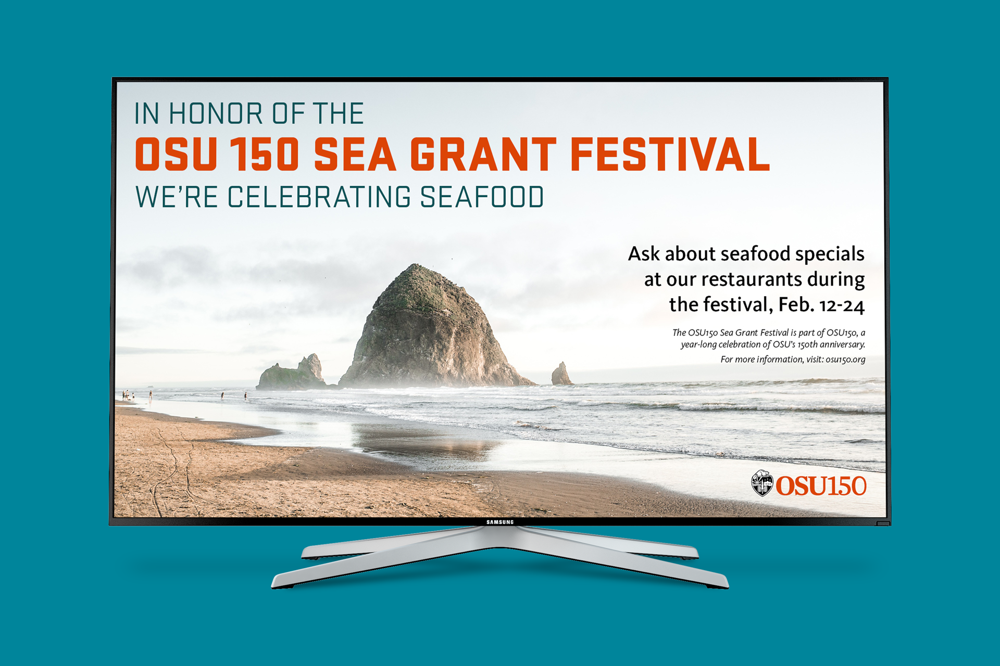
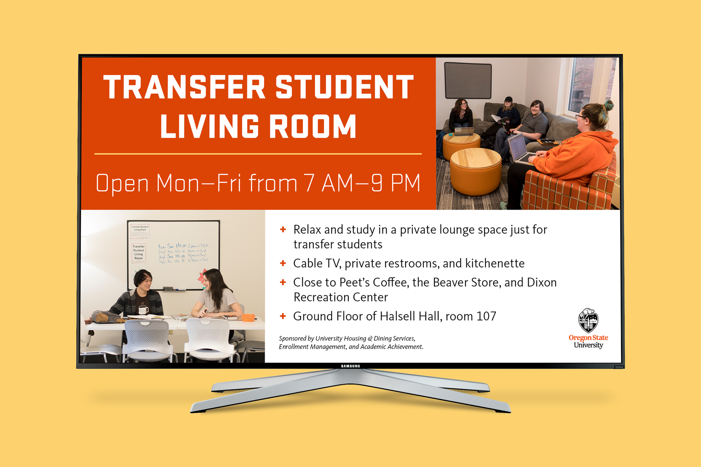
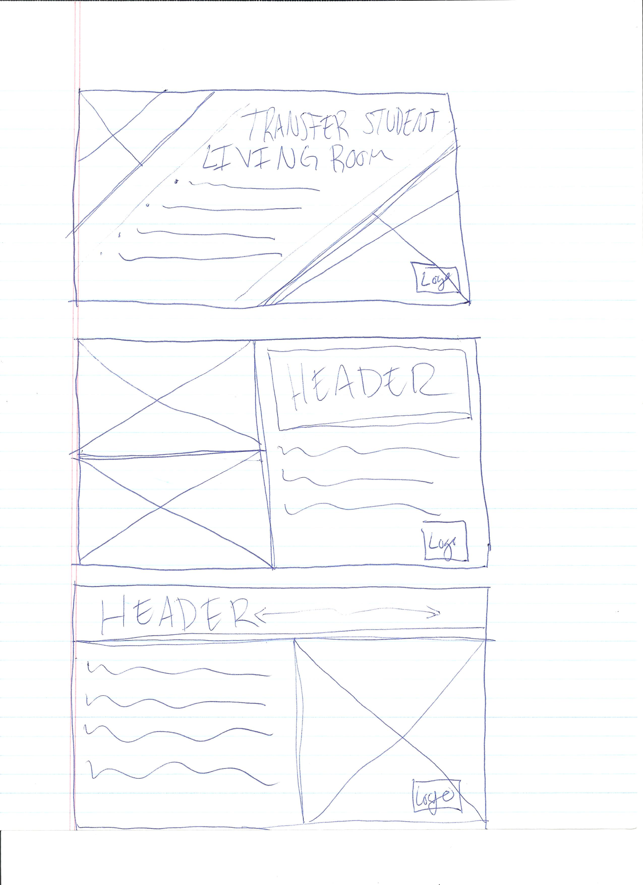
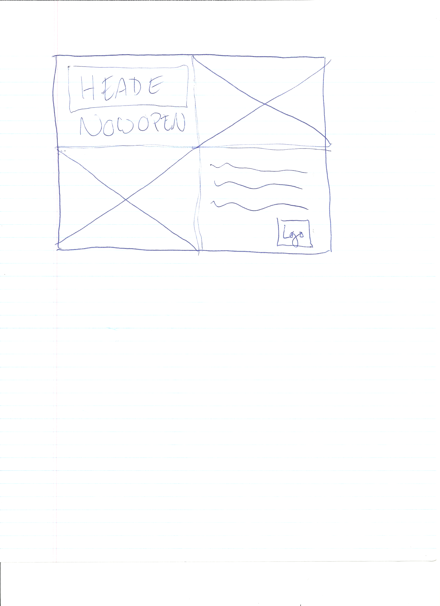
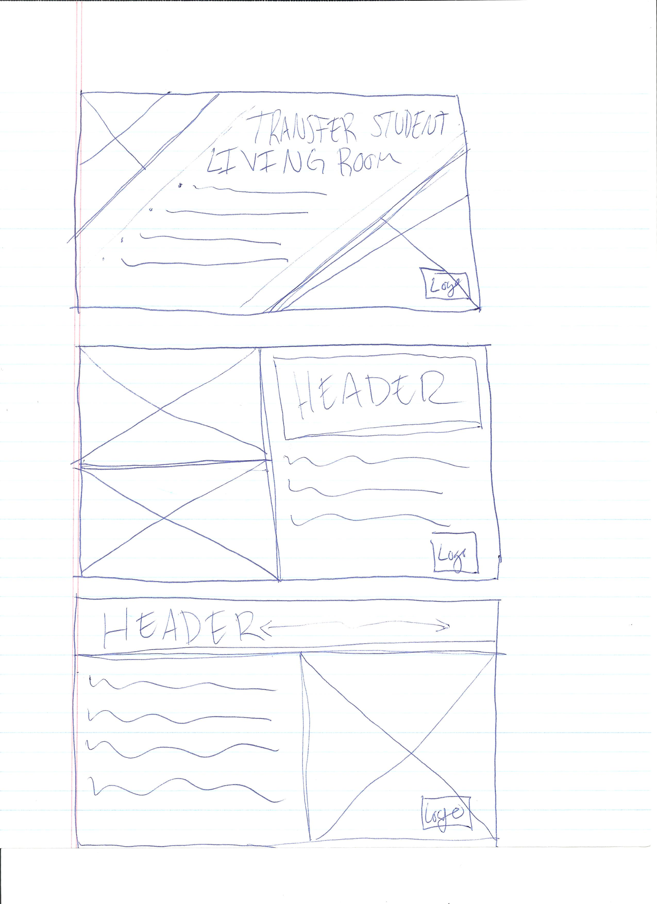
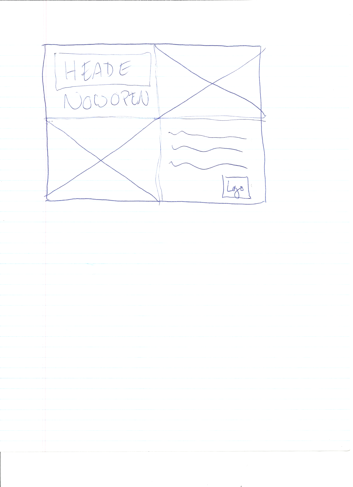

Digital Signage
One of my main responsibilities for University Housing & Dining Services is to maintain the digital signage for both OSU Corvallis and OSU Cascades campus' dining centers and residence halls. I keep the system up-to-date and design slides. These are a couple of my favorites! You may also view my process for creating digital slides below the completed work.
For the Sea Grant Festival slide, I wanted to do something different from our typical slide layout. Often, a digital slide will have all the information on one side, with a visual element on the other. I utilized a gorgeous landscape featuring Haystack Rock that stretched across the entire slide to draw viewers in. All the while retaining legibility to quickly grasp inforamtion since the slides rotate every 10 seconds.
The goal for the Transfer Student Living Room slide was to bring awareness to it. The room had just opened, and we wanted to spread the word to students. For this slide, I photographed one image and pulled the other from a photoshoot with a contracted photographer. This helped to show that the living room was multipurpose.
Process
Step 1: Notes & Research
At University Housing & Dining Services I'm either emailed about a new project, or my manager approaches me in person to talk about a new project. In the case of the Transfer Student Living Room slide, we had an in person conversation. So, I took notes and asked questions that were relevant to the project. Otherwise, I refer to the email sent to me for details and ask questions if I'm missing any information.
Step 2: Sketches
I start every digital slide with sketching possible layouts on paper. The first two pages are from the Sea Grant Festival Slide, and the last two are from the Transfer Student Living Room.

 



Step 3: Digital Development
After I've finished my initial sketches, I pick the layout that seems to have the most potential in fulfilling the project goals and bring it into InDesign. This stage in the process is also when I create or pull any assets needed. Usually, the slide mostly goes through slight adjustments like text changes after this. However, the Transfer Student Living Room slide is a good example of how the design changed throughout the process.
In the in-progress image below you can see that the layout is divided into equal quadrants. The text is also different, and so is one of the images.
Step 4: Test & Review
Before I post a slide to our TV screens, I will see how it looks on our test screen. I often catch something such as a typo or color issue. While testing the slide, I also show it to my managers for a final review and confirmation to launch the slide. Once the slide has been confirmed ready for launch, I post it!